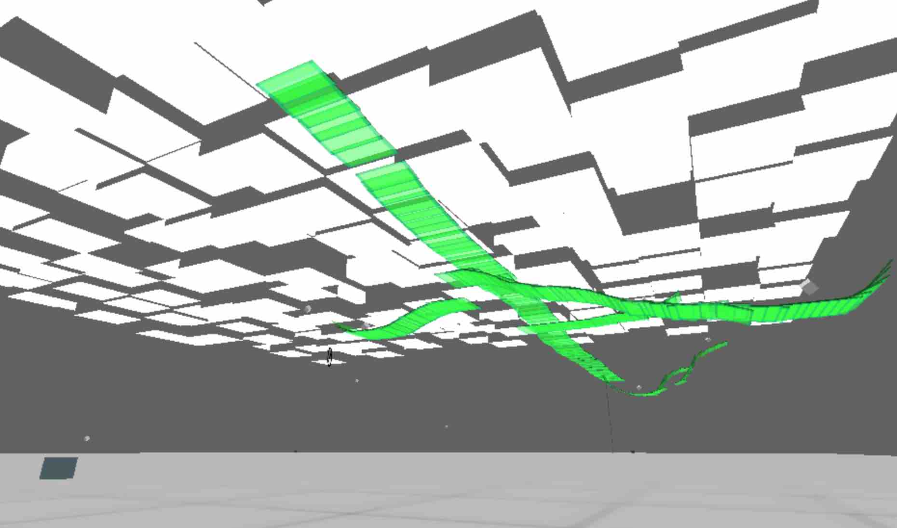

I should probably explain the controls to you now. When I made Phenomenol back in 2014, I wanted it to be a sort of 3d line rider. There are two third-person points of view from which you can draw platforms in the space (mouse to draw, z to toggle pov). While in this drawing mode, you can control (using wasd) a marker that determines how far away from the camera the platforms will be placed. The idea is to place platforms so that the first-person character (wasd + mouse) can, by traversing them, collect the spinning cubes around the level. If you run out of platforms, don't worry; in first-person mode you can shoot (lmb) projectiles to collect/recall them. Last thing: those blue boxes on the ground in each corner will launch you into the air, which can be helpful. Phenomenol came out a tedious and unforgiving game, but if you approach it with patience it ~can~ be (strangely) compelling.
NB: Phenomenol was original made in a much older version of unity, and rebuilding it for the post-flash era introduced some strangeness. Then again, it was pretty strange to begin with...
